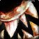

Nadina’s Pendant of Purity
Nadina's Pendant of PurityNadina's Pendant of Purity16 stamina, 14 intellect, 27 spell damage, 79 healing power, 19 spell crit rating (0.86%)Drops from Mother Shahraz, Black Temple
16 stamina, 14 intellect, 27 spell damage, 79 healing power, 19 spell
crit rating (0.86%)
Drops from Mother Shahraz, Black Temple
What influencers say
Zatar (Classic Wow Builds)
Zatar (Classic Wow Builds) · 86:04
67k views
Puts it on Holy Paladin, Restoration Shaman and holy priest
Zatar calls it a safe give to a holy paladin for its crit and mana per
five, and says shamans and priests would also want it if the PvP haste
healing neck does not make it into the game.
NOHITJEROME
NOHITJEROME · 11:22
5k views
Keeps it off Restoration Druid
NOHITJEROME rates it slightly better than Lord Sanguinar's Claim and
easier to get, but says the crit is nearly wasted on rolling Lifeblooms
so resto druids should be low priority on it.
Showing all 4 spec cards.
No specs are selected, so no cards are showing. Use Show every spec to bring all of them back.
Holy Paladin
StandingUpgrade
Constraints
No hit cap applies to this spec.
No crit cap.
Global cooldown floor at 50% spell haste, which nothing rostered reaches
from gear this phase.
Delta
Nadina's Pendant of PurityNadina's Pendant of Purity16 stamina, 14 intellect, 27 spell damage, 79
healing power, 19 spell crit rating (0.86%)Drops from Mother Shahraz, Black
Temple in Holy Paladin
terms EPV 102.07
| Stat | Over best pre-phase off-piece, Tempest Keep Lord Sanguinar's ClaimLord Sanguinar's Claim25 stamina, 19 intellect, 27 spell damage, 79 healing power EPV 93.75 | Over next best off-piece, Karazhan Emberspur TalismanEmberspur Talisman22 spell damage, 66 healing powerDrops from Nightbane, Karazhan EPV 74.25 | Over next best off-piece, Terokkar Forest Gezzarak's FangGezzarak's Fang15 intellect, 19 spell damage, 57 healing power EPV 67.50 | Over best Phase 3 off-piece, Slave Pens Amulet of Glacial TranquilityAmulet of Glacial Tranquility22 stamina, 21 intellect, 16 spell damage, 48 healing power EPV 61.50 | ||||
|---|---|---|---|---|---|---|---|---|
| Change | Converted | Change | Converted | Change | Converted | Change | Converted | |
| stamina | -9 | +16 | +16 | -6 | ||||
| intellect | -5 | -0.07% spell crit · -1.93 spell damage · -1.93 healing power | +14 | +0.19% spell crit · +5.39 spell damage · +5.39 healing power | -1 | -0.01% spell crit · -0.39 spell damage · -0.39 healing power | -7 | -0.10% spell crit · -2.70 spell damage · -2.70 healing power |
| spell damage | 0 | +5 | +8 | +11 | ||||
| healing power | 0 | +13 | +22 | +31 | ||||
| spell crit | +19 | +0.86% | +19 | +0.86% | +19 | +0.86% | +19 | +0.86% |
| Stat Highlights (Total Change) | +0.79% spell crit -1.93 spell damage -1.93 healing power | +1.05% spell crit +10.39 spell damage +18.39 healing power | +0.85% spell crit +7.62 spell damage +21.61 healing power | +0.76% spell crit +8.30 spell damage +28.30 healing power | ||||
No Tier 6 and no Tier 5 is ranked for this spec in this slot, so that
comparison is not shown. A weapon the workbook does not rank cannot be
compared against, and a spec with no captured gear set has nothing
recorded to carry in.
Restoration Shaman
StandingUpgrade
Constraints
No hit cap applies to this spec.
No crit cap.
Global cooldown floor at 50% spell haste, which nothing rostered reaches
from gear this phase.
Delta
Nadina's Pendant of PurityNadina's Pendant of Purity16 stamina, 14 intellect, 27 spell damage, 79
healing power, 19 spell crit rating (0.86%)Drops from Mother Shahraz, Black
Temple in Restoration
Shaman terms EPV
112.15
| Stat | Over best pre-phase off-piece, Tempest Keep Lord Sanguinar's ClaimLord Sanguinar's Claim25 stamina, 19 intellect, 27 spell damage, 79 healing power EPV 99.38 | Over next best off-piece, Karazhan Emberspur TalismanEmberspur Talisman22 spell damage, 66 healing powerDrops from Nightbane, Karazhan EPV 82.50 | Over next best off-piece, Terokkar Forest Gezzarak's FangGezzarak's Fang15 intellect, 19 spell damage, 57 healing power EPV 70.80 | Over best Phase 3 off-piece, Slave Pens Amulet of Glacial TranquilityAmulet of Glacial Tranquility22 stamina, 21 intellect, 16 spell damage, 48 healing power EPV 64.92 | ||||
|---|---|---|---|---|---|---|---|---|
| Change | Converted | Change | Converted | Change | Converted | Change | Converted | |
| stamina | -9 | +16 | +16 | -6 | ||||
| intellect | -5 | -0.06% spell crit · -1.50 spell damage · -1.50 healing power | +14 | +0.17% spell crit · +4.20 spell damage · +4.20 healing power | -1 | -0.01% spell crit · -0.30 spell damage · -0.30 healing power | -7 | -0.09% spell crit · -2.10 spell damage · -2.10 healing power |
| spell damage | 0 | +5 | +8 | +11 | ||||
| healing power | 0 | +13 | +22 | +31 | ||||
| spell crit | +19 | +0.86% | +19 | +0.86% | +19 | +0.86% | +19 | +0.86% |
| Stat Highlights (Total Change) | +0.80% spell crit -1.50 spell damage -1.50 healing power | +1.04% spell crit +9.20 spell damage +17.20 healing power | +0.85% spell crit +7.70 spell damage +21.70 healing power | +0.77% spell crit +8.90 spell damage +28.90 healing power | ||||
No Tier 6 and no Tier 5 is ranked for this spec in this slot, so that
comparison is not shown. A weapon the workbook does not rank cannot be
compared against, and a spec with no captured gear set has nothing
recorded to carry in.
Restoration Druid
StandingUpgrade
Constraints
No hit cap applies to this spec.
No crit cap.
Part of this spec's damage is periodic, and periodic damage cannot crit
in this patch, so crit reaches less of its output than the character
sheet suggests.
Global cooldown floor at 50% spell haste, which nothing rostered reaches
from gear this phase.
Delta
Nadina's Pendant of PurityNadina's Pendant of Purity16 stamina, 14 intellect, 27 spell damage, 79
healing power, 19 spell crit rating (0.86%)Drops from Mother Shahraz, Black
Temple in Restoration
Druid terms EPV
87.20
| Stat | Over best pre-phase off-piece, Tempest Keep Lord Sanguinar's ClaimLord Sanguinar's Claim25 stamina, 19 intellect, 27 spell damage, 79 healing power EPV 88.20 | Over next best off-piece, Karazhan Emberspur TalismanEmberspur Talisman22 spell damage, 66 healing powerDrops from Nightbane, Karazhan EPV 71.50 | Over next best off-piece, Terokkar Forest Gezzarak's FangGezzarak's Fang15 intellect, 19 spell damage, 57 healing power EPV 63.50 | Over next best off-piece, Netherstorm Karja's MedallionKarja's Medallion15 intellect, 10 spirit, 19 spell damage, 55 healing power EPV 62.50 | ||||
|---|---|---|---|---|---|---|---|---|
| Change | Converted | Change | Converted | Change | Converted | Change | Converted | |
| stamina | -9 | +16 | +16 | +16 | ||||
| intellect | -5 | -0.06% spell crit | +14 | +0.17% spell crit | -1 | -0.01% spell crit | -1 | -0.01% spell crit |
| spirit | 0 | 0 | 0 | -10 | ||||
| spell damage | 0 | +5 | +8 | +8 | ||||
| healing power | 0 | +13 | +22 | +24 | ||||
| spell crit | +19 | +0.86% | +19 | +0.86% | +19 | +0.86% | +19 | +0.86% |
| Stat Highlights (Total Change) | +0.80% spell crit | +1.04% spell crit +5 spell damage +13 healing power | +0.85% spell crit +8 spell damage +22 healing power | +0.85% spell crit +8 spell damage +24 healing power | ||||
No Tier 6 and no best Phase 3 off-piece and no Tier 5 is ranked for this
spec in this slot, so that comparison is not shown. A weapon the
workbook does not rank cannot be compared against, and a spec with no
captured gear set has nothing recorded to carry in.
Priest Healer
StandingUpgrade
Constraints
No hit cap applies to this spec.
No crit cap.
Global cooldown floor at 50% spell haste, which nothing rostered reaches
from gear this phase.
Delta
Nadina's Pendant of PurityNadina's Pendant of Purity16 stamina, 14 intellect, 27 spell damage, 79
healing power, 19 spell crit rating (0.86%)Drops from Mother Shahraz, Black
Temple in Priest Healer
terms EPV 139.56
| Stat | Over best pre-phase off-piece,
Gruul's Lair
 Teeth of GruulTeeth of Gruul21 intellect, 19 spirit, 16 spell damage, 46 healing powerDrops from Gruul the Dragonkiller, Gruul's Lair EPV 133.47 |
Over next best off-piece, Tempest Keep Lord Sanguinar's ClaimLord Sanguinar's Claim25 stamina, 19 intellect, 27 spell damage, 79 healing power EPV 126.28 | Over next best off-piece, Karazhan Shining Chain of the AfterworldShining Chain of the Afterworld18 stamina, 21 intellect, 19 spirit, 16 spell damage, 46 healing powerDrops from Netherspite, Karazhan EPV 112.61 | Over best Phase 3 off-piece, Slave Pens Amulet of Glacial TranquilityAmulet of Glacial Tranquility22 stamina, 21 intellect, 16 spell damage, 48 healing power EPV 90.52 | ||||
|---|---|---|---|---|---|---|---|---|
| Change | Converted | Change | Converted | Change | Converted | Change | Converted | |
| stamina | +16 | -9 | -2 | -6 | ||||
| intellect | -7 | -0.09% spell crit | -5 | -0.06% spell crit | -7 | -0.09% spell crit | -7 | -0.09% spell crit |
| spirit | -19 | -4.75 spell damage · -4.75 healing power | 0 | -19 | -4.75 spell damage · -4.75 healing power | 0 | ||
| spell damage | +11 | 0 | +11 | +11 | ||||
| healing power | +33 | 0 | +33 | +31 | ||||
| spell crit | +19 | +0.86% | +19 | +0.86% | +19 | +0.86% | +19 | +0.86% |
| Stat Highlights (Total Change) | +0.77% spell crit +6.25 spell damage +28.25 healing power | +0.80% spell crit | +0.77% spell crit +6.25 spell damage +28.25 healing power | +0.77% spell crit +11 spell damage +31 healing power | ||||
No Tier 6 and no Tier 5 is ranked for this spec in this slot, so that
comparison is not shown. A weapon the workbook does not rank cannot be
compared against, and a spec with no captured gear set has nothing
recorded to carry in.